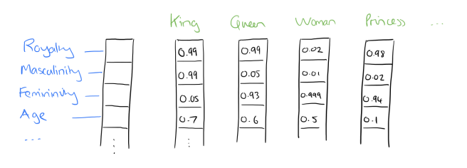
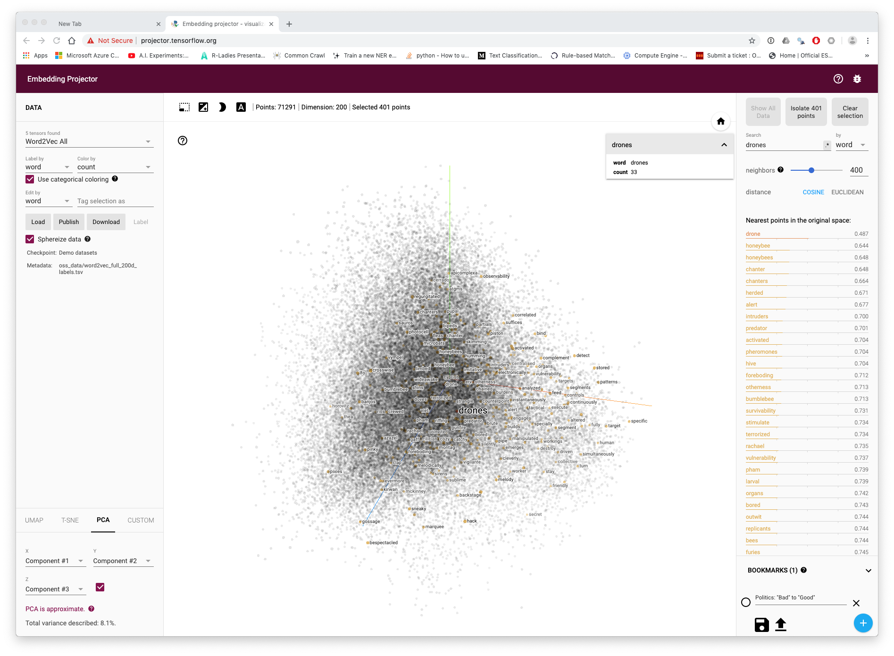
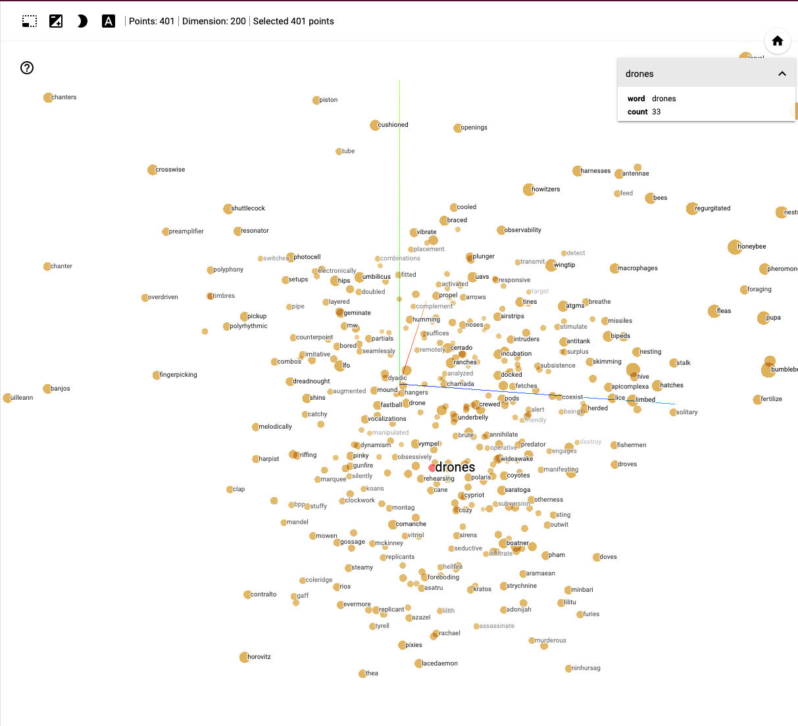

Chapter 9 Machine Learning (placeholder)
9.0.1 Artificial Intelligence & Machine Learning
Please note this is a working draft and is likely to be substantially revised. Citations are incomplete
In recent years Artificial Intelligence has become a focus of discussion for its potentially transformative and disruptive effects on economy and society. The recent rise of artificial intelligence in the patent system is the focus of a landmark 2019 WIPI Technology Trends Report “Artificial Intelligence” https://www.wipo.int/publications/en/details.jsp?id=4386. The in depth review of patent activity revealed that it is one of the fastest growing areas of patent activity with inventions that are applicable across diverse fields such as telecommunications, transportation, life and medical sciences, personal devices and human-computer interactions. Sectors identified in the WIPO report include banking, entertainment, security, industry and manufacturing, agriculture and networks. Perhaps the best known “flagship” initiative for artificial intelligence is the pursuit of self-driving cars by Tesla and Google among others. However, many companies, including those that work in the domain of patent analytics are increasingly claiming that they apply artificial intelligence as part of their products.
When approaching artificial intelligence it is important to look beyond the hype and marketing strategies to the the underlying technology. In practical terms this can be described as computer based approaches to classification with respect to images and texts. The dominant approach to classification involves a range of computational machine learning approaches that have been undergoing rapid development in recent years.
Examples of the use of machine learning approaches to classification tasks include predictive text entry on mobile phones, a technology anticipated in the 1940s by researchers in China [wikipedia]. A patent for an assistive device for deaf people involving predictive text was awarded in 1988 (US4754474A) [wikipedia]. The rise of mobile phones witnessed an explosion in the development and use of predictive text applications. Predictive text is also widely used in search engines to suggest phrases that a user may wish to use in their search. Other applications include spam filtering for emails or suggesting similar items that a customer might be interested in on online shops.
While text classification is perhaps the main everyday area where machine learning is encountered in practice image classification has been the major focus of development and is reflected in the prominence of image classification challenges on Kaggle. The implementation of image classification approaches is reflected in everyday terms in image searches in online databases which suggest relevant images and suggestions for tagging of images and persons in social media applications. Image classification is also an important area of innovation in areas such as medical diagnostics, robotics, self-driving cars or facial recognition for security systems. A separate but less visible area of development is control systems. The online data science platform Kaggle serves as a host for competitions and challenges in machine learning such as image classification and can provide an insight into the nature of machine learning developments.
A 2017 report by the UK Royal Society “Machine learning: the power and promise of computers that learn by example” provides a valuable overview of machine learning approaches.18. For our purposes, the Royal Society report highlights the key underlying feature of machine learning: learning by example.
As we will see in this chapter machine learning approaches commonly involve training a statistical model to make predictions about patterns (in texts or in images). Training of machine learning models is normally based on the use of examples. The quality of the predictions that are produced by a model is heavily dependent on the quality and the number of examples that it is trained on.
The development of machine learning models proceeeds in a cycle from the collection and pre-processing of training data, to the development of the model with the training data followed by evaluation of the performace of the model against previously unseen data (known as the evaluation or test set). Based on the results more training data may be added and the parameters of the model adjusted or tuned to optimise performance. When a robust model has been developed it can then be used in production to automate the classification tasks.
Machine learning involves a range of different algorithms (that may at times be used in combination), examples include the well known Principal Component Analysis (PCA), linear regression, logistic regression (for classification), decisio-trees, K-means clustering, least squares and polynomial fitting, and neural networks of a variety of types (e.g convolutional, recurrent and feed forward). Some of the algorithms used in machine learning predate the rise in popularity of the term machine learning and would not be accepted as machine learnig (e.g. PCA and regression models). Readers interested in learning more about the algorithms involved in machine learning will discover a wide range of often free online machine learning courses such as from popular platorms such as Coursera, Udemy, Edx and Data Camp to name but a few. For text classification the Stanford Course “Stanford CS224N: NLP with Deep Learning” provides 20 hours of video lectures that provides a detailed insight into many of the topics addressed in this chapter.19
However, while it is important to engage with the background to machine learning algorithms, in reality machine learning is becoming increasingly accessible for a range of classification tasks in two ways.
- through fee based online cloud services offered by Google, Amazon, Microsoft Azure and others that will perform specific classification tasks at scale such as image classification without a requirement for advanced training;
- the availability of free open source packages such as scikitlearn, fastText (Facebook), keras and spaCy (Explosion AI)
One of the challenges writing about machine learning is making the processes involved visible. To make it easier to engage with machine learning we will use the free Python Natural Language Processing library spaCy and the associated fee based Prodigy annotation and model training tool from Explosion AI in Germany. While skikitlearn, fasttext and keras are also major tools, spaCy and Prodigy have the considerable advantage of allowing end to end transparency in writing about the steps innvolved in developing and applying machine learning models.
This chapter focuses on a basic machine learning workflow involving the following steps:
- Creating seed terms from word vectors to build a text classification model, training the model and testing it.
- Named Entity Recognition. Training a model to recognise entities of interest within the texts identified by the true or false model.
- Using a model to classify and identify named entities in a text
9.0.2 Word Vectors
“You shall know a word by the company it keeps (Firth, J. R. 1957:11)”
In the last chapter we explored approaches to text mining that do not involve the use of machine learning models. This involved text mining to identify terms for a dictionary that would allow for the identification of texts that contain one or more terms using ngrams.
Dictionary based methods provide powerful tools for analysis. However, they suffer from two main issues.
- they will only ever return exactly the same terms that are in the dictionary. That is, they cannot identify nearby or closely related terms.
- dictionary based methods can be very memory intensive particularly if the dictionaries involved are very large.
To overcome the first of these issues it is now common practice to combine dictionary approaches with a statistical model to more accurately classify texts at various levels of detail. That is to add a statistical learning component to improve classification.
In the case of the second issue it is important to bear in mind that machine learning models can be more demanding on memory and computational resources than dictionary based methods. However, as we will discuss below, the availability of machine learning models allows for the development of strategies to minimise demands on memory and computational power such as initially training a model with a very large dictionary and then deploying a purely statistical based model without the dictionary. Much however will depend on the precise task at hand and the available memory and compute power available. In this chapter we assume that you will be using a laptop with a modest 16Gb of Ram.
9.0.2.1 Word Vectors
In the last chapter we used Vantage Point to create a co-occurrence matrix to build search terms and to refine analysis of a dataset. A co-occurrence matrix can be built in Vantage Point either as a count of the number of times that words or phrases in a dataset co-occurr with each or using measures such as cosine similarity.
One straightforward way of thinking about a word vector is as a co-occurrence matrix where words are transformed into numeric values and the vocabulary is cast into a multidimensional vector space. Within that space words with the same or similar meanings will be closer (in terms of scores or weights). More precisely, words that share similar contexts will have the same or similar meanings while words with dissimmliar meanings will be further away. This observation is an important departure point for word vectors compared with a straightforward co-occurrence matrix that counts the number of times that words occur together in a given set. The reason for this is that the focus is on the context, or the company that a word is keeping. As we will see in a moment, word vectors are learned representations of the relationships between words based on minimisation of the loss (error) of a predictive model.20(https://medium.com/@jayeshbahire/introduction-to-word-vectors-ea1d4e4b84bf)
The seminal paper on word vectors by Mikolov et al 2013 neatly summarises the problem they seek to address as follows:
"Many current NLP systems and techniques treat words as atomic units - there is no notion of similarity between words, as these are represented as indices in a vocabulary. (???)
The problem that Mikolov and co-authors identify is that the development of approaches such as automatic speech recognition is constrained by dependency on high quality manual transcripts of speech containing only millions of words while machine translation models are constrained by the fact that “…corpora for many languages contain only a few billions of words or less” (???). Put another way, the constraint presented by approaches at the time was that the examples available for computational modelling could not accommodate the range of human uses of language or more precisely, the meanings conveyed. Mikolov et. al. successfully demonstrated that distributed representations of words using neural network based language models outperfornmed the existing Ngram models on much larger datasets (using 1 million common tokens from the Google News corpus) (???).
“We use recently proposed techniques for measuring the quality of the resulting vector representa- tions, with the expectation that not only will similar words tend to be close to each other, but that words can have multiple degrees of similarity [20]. This has been observed earlier in the context of inflectional languages - for example, nouns can have multiple word endings, and if we search for similar words in a subspace of the original vector space, it is possible to find words that have similar endings [13, 14]. Somewhat surprisingly, it was found that similarity of word representations goes beyond simple syntactic regularities. Using a word offset technique where simple algebraic operations are performed on the word vectors, it was shown for example that vector(”King”) - vector(”Man”) + vector(”Woman”) results in a vector that is closest to the vector representation of the word Queen [20]."
This observation has become one of the most famous in computational linguistics and is worth elaborating on. In a word vector it was found that.
King - Man + Woman = Queen
In a 2016 blog post on “The amazing power of word vectors” Adrian Coyler provides the following illustration of how this works. Note that the labels do not exist in the vectors and are added purely for explanation in this hypothetical example. https://blog.acolyer.org/2016/04/21/the-amazing-power-of-word-vectors/

Let us imagine that each word in each individual vector has a distributed value across hundreds of dimensions across the corpus. Words like King, Queen, Princess have a high similarity in vector space with the word Royalty. In contrast King has a strong similarity with Masculinity while Queen has a strong similarity with Femininity. Deducting Man from King and adding Woman can be readily be seen to lead to Queen in the vector space. Other well known examples from the same paper lead to the calculation that “big-bigger” = “small:larger” etc.
In follow up work Mikolov and others at Google released the word2vec tool for the creation of
9.0.3 Word Vectors with fastext
To illustrate the use of word vectors we will use the fastText machine learning package developed by Facebook.
FastText is a free text classification and representation package produced by Facebook that provides downloadable multi-language models for use in machine learning. At present vecotr models are available for 157 languages.
FastText can be used from the command line or in Python (fasttext) or in R with the fastrtext package. FastText is simple to install and use and is a good way to get started with word vectors and machine learning because it is very easy to use. Fasttext is under active development with the latest updates posted on the fasttext website.
FastText was developed by researchers including Tomas Mikolov as an alternative to the increasingly popular deep learning models for text classification at scale. It is a lightweight tool that emphasises speed in classification (Bojanowski et al. 2016; Joulin, Grave, Bojanowski, and Mikolov 2016; Joulin, Grave, Bojanowski, Douze, et al. 2016) and arguably outperforms deep learning models.
To get started follow the fastext instructions to install fasttext from the command line or in Python. We will demonstrate fasttext in Python but it is easy, if not easier, to run from the command line.
git clone https://github.com/facebookresearch/fastText.git
cd fastText
sudo pip install .
# or
sudo python setup.py installVerify the installation
If this has worked correctly you should not see anything after import fasttext.
In the Terminal we now need some data to train. The fastext example usses wikipedia pages in English that take up 15Gb. In the terminal download the smaller version as follows.
As this is an XML file it needs to be parsed. The file for parsing is bundled with fastext as wikifil.pl and you will need to get the path right for your installation. If in doubt download fasttext from the command line, make and then cd into the directory for this step. Record the path to the file that you will need in the next step in Python.
Check that the file has parsed on the command line.
Train word vectors
9.0.4 Training Word Vectors for Drones
We will use a small set of patent texts on drones from the drones package for illustration. Ideally use the largest possible set. However, for better results use a single language and also regularise the texts, so that everything is lower case. You may also improve results by removing all punctuation.
If we wished to do that in R by way of example we access the title, abstract and claimes table (tac) in the drones training package. We would then combine the the fields, convert to lowecase and then replace all the punctuation with a space. We might tidy up by removing any double spaces created by removing the punctuation
library(tidyverse)
library(drones)
drones_texts_vec <- drones::tac %>%
unite(text, c("title_english", "abstract_english", "first_claim"), sep = " ") %>%
mutate(text = str_to_lower(text)) %>%
mutate(text = str_replace_all(text, "[[:punct:]]", " ")) %>%
mutate(text = str_replace_all(text, " ", " ")) %>%
select(text)
head(drones_texts_vec)This cleaned up annonymised text is available in the data folder of this handbook and in the drones package . Note that patent texts can be messy and you may want to engage in further processing. Once we have the data in a cleaned cleaned up format we can pass it to fast text in the terminal.
There are two available models for word vectors in fast text. These are
- skipgrams (predict a word from the contexts words arount it)
- cbow ADD DESCRIPTION
Next in the terminal we navitage to the fastext folder and provide our csv or simple text file as an input and specify the output.
There are total of 4.4 million words (tokens) in the vocabulary with xxx distinct words. It takes about 30 seconds for fasttext to process these words. These words boil down to 19,125 words in total.
Read 4M words
Number of words: 19125
Number of labels: 0
Progress: 100.0% words/sec/thread: 50624 lr: 0.000000 avg.loss: 1.790453 ETA: 0h 0m 0sThe processing creates two files in our target directory. The first is drones_vec.bin containing the model and the second is drones_vec.vec. The second file is actually a simple text file that contains the weights for each individual terms in the vector. Here is a glimpse of that file for the word device.
Note two points here. The first is that the default vector space is 100 dimensions but popular choices go up to 300. Note also that there will be common stop words (and, the, etc) in the model that we may want to remove. The second main point is that the file size of the .bin file is nearly 800Mb and may get much larger fast.
From the terminal we can print the word vectors for specific words as follows:
$ echo "drone autonomous weapon" | ./fasttext print-word-vectors /Users/colinbarnes/handbook/data/fasttext/drones_vec.bin
drone 0.38326 0.4115 0.28873 -0.35648 -0.24769 -0.22507 0.18887 0.012016 0.51823...
autonomous 0.41683 0.39242 0.16987 -0.028905 0.38609 -0.57572 -0.44157 -0.51236...
weapon 0.20932 0.59608 0.21891 -0.42716 0.19016 -0.76555 0.23395 -0.63699 -0.12079...9.0.5 Using Word Vectors
One common use of word vectors is to build a thesaurus. We can also check how our vectors are performing, and adjust the parameters if we are not getting what we expect. We do this by calculating the nearest neighbours (nn) in the vector space and then entering a query term, The higher the score the closer the neighout is.
$ ./fasttext nn /Users/colinbarnes/handbook/data/fasttext/drones_vec.bin
Query word? drone
codrone 0.69161
drones 0.66626
dron 0.627708
microdrone 0.603919
quadrone 0.603164
stabilisation 0.594831
stabilised 0.579854
naval 0.572352
piloted 0.571288
stabilise 0.564452Hmmm, OK but maybe we should try UAV
Query word? uav
uavgs 0.768899
aerial 0.742971
uavs 0.710861
unmanned 0.692975
uad 0.684599
ua 0.667772
copter 0.666946
usv 0.652238
uas 0.644046
flight 0.643298This is printing some words that we would expect in both cases such as plurals (drones, uavs) along with types of drones but we need to investigate some high scoring terms, for exaample in set one we have the word codrone which is a specific make of drone. The word dron may be the word for drone in another language. In the second set we have uavgs which may stand for UAV Ground School along with terms such as uad which stands for unmanned aerial device.
So, this reveals that we are obtaining some meaningful results on single terms that can guide our construction of a search query. We could also look at this another way by identifying terms that may be sources of noise. Here we will use the word bee.
Query word? bee
honey 0.861416
hive 0.830507
bees 0.826173
hives 0.81909
honeybee 0.81183
queen 0.806328
honeycombs 0.803329
honeybees 0.784235
honeycomb 0.783923
beehives 0.783663This is yielding decent results. We could for example use this to build a term exclusion list and we might try something similar with the word music (to exclude words like musician, musical, melodic, melody)where it is clear they cannot be linked to drones. For example, there may be drones that play music… but the words musician, melodic and melody are unlikely to be associated with musical drones.
An other way of generating word vectors is using the Continuous Bag of Words (CBOW) methods.
A Continuous Bag of Words approach attempts to predict the target word from the context words that surround it .
The word drone is another name for an unmanned aerial vehicle or UAV.
9.0.6 Exploring Analogies
Word vectors are famous for being able to predict relationships of the type
”King” - ”Man” + ”Woman” = “Queen”
We can experiment with this with the drones vector we created earlier using the analogies function in fasttext.In the terminal run:
Query triplet (A - B + C)? drone autonomous bee
honey 0.687067
larvae 0.668081
larva 0.668004
brood 0.664371
honeycombs 0.655226
hive 0.653633
honeycomb 0.651272
bees 0.632742
comb 0.626189
colonies 0.61386what this tells us is that drone - automomous + bee = honey or larvae, or larva or brood. We can more or less reverse this calculation.
Query triplet (A - B + C)? bee honey drone
drones 0.651486
codrone 0.63545
stabilisation 0.592739
dron 0.582929
na 0.572516 # drop NA from the underlying set
microdrone 0.571889
naval 0.541626
continuation 0.54127
proposition 0.540825
déstabilisation 0.536781What this example illustrates is that terms for bees and terms for drones as a technology, as we might expect, occupy different parts of the vector space.
It is fundamentally quite difficult to conceptualise a 100 or 300 dimension vector space. However, Google has developed a tensorflow projector and a video that discusses high dimensional space in an accessible way A.I. Experiments: Visualizing High-Dimensional Space. The Distill website offers good examples of the visualisation of a range of machine learning components.
We can view a simplifiled visualisation of the term drones in 200 dimension vector space (on a much larger model than we have discussed above) in Figure ??.

Here we have selected to display 400 terms linked to the source word drones across the representation of the vector space. As with network analysis we can see that clusters of association emerge. As we zoom in to the vector space representation we start to more clearly see nearest points based in this case of Principle Components Analysis (PCA).

The representation of terms in vector space in these images is different to those we viewed above and more clearly favours bees and music, although closer inspection reveals words such as ‘winged’, ‘terrorized’. ‘missile’ and ‘predator’ that suggest the presence of news related terms when compared with the patent data used above.
This visualisation highlights the power of the representation of words as vectors in vector space. It also highlights that the vector space is determined by the source data. For example, many vector models are built from downloads of the content of Wikipedia (available in a number of languages) or on a much larger scale from internet web pages through services such as Common Crawl.
For patent analytics, this can present the problem that the language in vector models lacks the specificity in termns of the use of technical language of patent documents. For that reason you may be better, as illustrated above, wherever possible it is better to use patent domain specific word embeddings.
9.0.7 Patent Specific Word Embeddings
The increasing accessibility of patent data, with both the US and the EP full text collections now available free of charge, has witnessed growing efforts to develop word embedding approaches to patent classification and search.
A very good example of this type of appproach is provided by Julian Risch and Ralf Krestel at the Hasso Plattner Institute at the University of Potsdam with a focus on patent classification (Risch and Krestel 2019).
Risch and Krestel test word embedding approaches using three different datasets
- the WIPO-alpha dataset of 75,000 excerpts of English language PCT applications accompanied by subclass information (Automated Categorization in the International Patent Classification 2003);
- A dataset of 5.4 million patent documents from the USPTO between 1976-2016 called USPTO-5M containing the full text and bibliographic data.21]
- A public dataset of with 2 million JSON formatted USPTO patent documents called USPTO-2M created by Jason Hoou containing titles, abstracts and IPC subclasses..22
These datasets are primarilly intended to assist with the automatic classification of patent documents. They used fastText on 5 million patent docunenst to train word enmeddings with 100, 200 and 300 dimensions based on lowercass words occurring 10 or more times and with a context window of 5. This involved a total of 28 billion tokens and, as they rightly point out, this is larger than the english Wikipedia corpus (16 billion) but lower than the 600 billion tokens in the Common Crawl dataset (Risch and Krestel 2019). As part of an oopen access approach focusing on reproducibility the resulting datasets are made available free of charge23
The word embedding were then used to support the develpment of a deep neural network using gated recurrent units (GRU) with the aim of predicting the main subclass for the doecument using 300 words from the title and abstract of the documents. The same network arcgicetchre was used to test the WIPO set, the standard Wikipedia embeddings. the USPTO-2M set and the USPTO-5M (restriced to titles and abstracts). The specific details of the experiments performed with the word embeddings and GRU deep neural network are available in the article. The main finding of the research is to demonstrate that patent specific word embeddings outperform the Wikipedia based embeddings. This confirms the very crude intuition that we gained from the very small samples of data on the term drones compared with the exploration of wikipedia based emebeddings.
One important challenge with the use of word vectors or embeddings is size. FasText has the considerable advantage that it is designed to run on CPU. That is, as we have seen it can be run on a laptop. However, the word embeddings provided by Risch and Krestel, notably the 300 dimension dataset, may present significant memory challenges to be used in practice. The word embeddings generated by the work of Risch and Krestel demonstrate some of these issues. Thus, the 100 dimension word embeddings vectors are 6 gigabytes in size, the 200 dimensions file is 12Gb and the 300 dimensions is 18Gb. In practice, these file sizes are not as initially intimidating as they appear. Thuse the 6Gb 100 dimension vectors easily run in fasttext on laptop with 16Gb of RAM.
9.0.8 Machine learning in Classification
Classification tasks essentially involve deciding if a particular document or image falls into an Yes or No or Dog or Cat category. In reality, the situation can be more complex than this because a single entity may overlap.
In the case of the term drone in patent data we have already seen that there are basically three categories in whicvh teh term drone may fall
- autonomous vehicles (flying, floating, submarine, space vehicles)
- Bee or apiculture related activity
- musical
- other (that we have not spotted yet)
9.0.8.1 Classification with Prodigy
As a starting point in working with machine
Create a dataset
https://support.prodi.gy/t/loading-gensim-word2vec-vectors-for-terms-teach/333/19
INSERT
A problem immediately becomes apparent when using the vectors that accompn
wget -c http://mattmahoney.net/dc/enwik9.zip -P data/fasttext
unzip data/fasttext/enwik9.zip -d data/fasttextpreprocess the XML file and check it in the terminal
Check the file:
The vector model can be built either in
”King”) - vector(”Man”) + vec- tor(”Woman”
References
Automated Categorization in the International Patent Classification. 2003. Vol. 37. 1. United States: Association for Computing Machinery (ACM). https://doi.org/10.1145/945546.945547.
Bojanowski, Piotr, Edouard Grave, Armand Joulin, and Tomas Mikolov. 2016. “Enriching Word Vectors with Subword Information.” arXiv Preprint arXiv:1607.04606.
Joulin, Armand, Edouard Grave, Piotr Bojanowski, Matthijs Douze, Hérve Jégou, and Tomas Mikolov. 2016. “FastText.zip: Compressing Text Classification Models.” arXiv Preprint arXiv:1612.03651.
Joulin, Armand, Edouard Grave, Piotr Bojanowski, and Tomas Mikolov. 2016. “Bag of Tricks for Efficient Text Classification.” arXiv Preprint arXiv:1607.01759.
Risch, Julian, and Ralf Krestel. 2019. “Domain-Specific Word Embeddings for Patent Classification.” Drug Testing and Analysis 53 (1): 108–22. https://doi.org/10.1108/dta-01-2019-0002.
https://royalsociety.org/-/media/policy/projects/machine-learning/publications/machine-learning-report.pdf↩
https://www.youtube.com/playlist?list=PLoROMvodv4rOhcuXMZkNm7j3fVwBBY42z↩
https://medium.com/@jayeshbahire/introduction-to-word-vectors-ea1d4e4b84bf↩
USPTO Bulk Products, now more readily available from PatentsView↩
Available for download from Github at https://github.com/JasonHoou/USPTO-2M and at http://mleg.cse.sc.edu/DeepPatent/↩
Accessible from: https://hpi.de/naumann/projects/web-science/deep-learning-for-text/patent-classification.html, last accessed: 2019-09-17↩